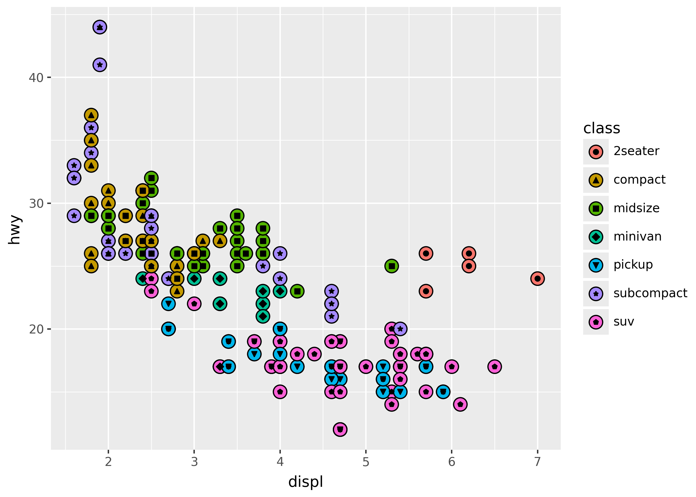
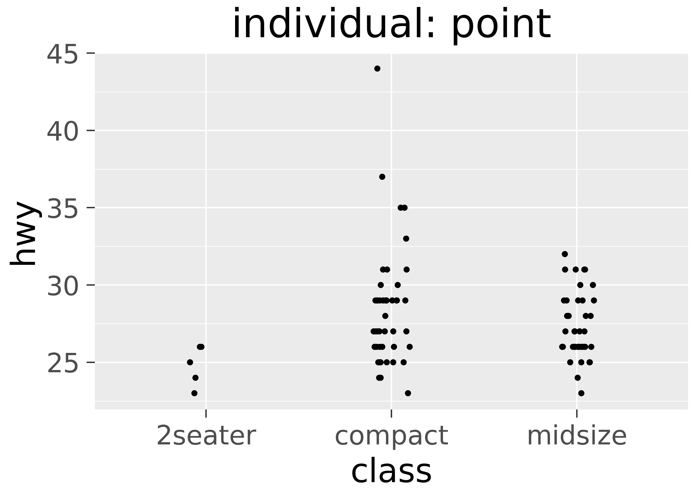
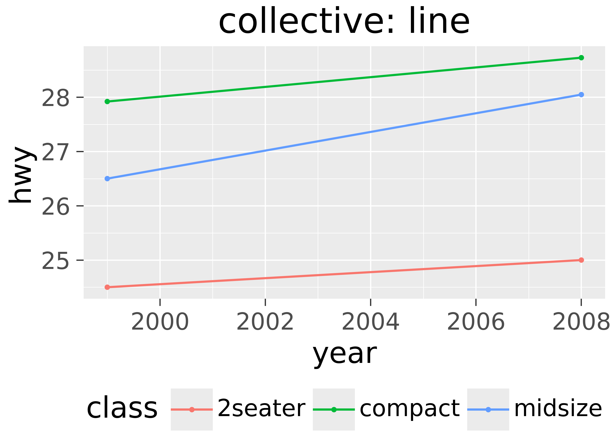

from plotnine import *
from plotnine.data import mpgGeometric objects
Geometric objects (geoms) determine how to turn mapped data into visual elements–such as points, lines, or even boxplots. There are two kinds of geoms: individual and collective.
TipYou will learn
- What individual and collective geoms are.
- How to make side-by-side bar charts.
- How to avoid overlapping points.
- How to run statistical calculations before plotting.
NoteKey points
- Geoms use aesthetic mappings to draw plot elements.
- Individual geoms draw one observation (row) with one element.
- Collective geoms draw multiple observations (rows) with one element (e.g. a boxplot).
- Collective geoms include lines, which are drawn between observations.
- Use the
position=argument to adjust the position of overlapping elements. - Use the
stat=argument to run calculations before plotting.
Setup
Basic use
Geom functions, like geom_point(), specify visual elements to draw on the plot. They’re rendered in the order they’re added to the plot.
For example, the plot below adds points will fill color corresponding to the class column, and then points with shape corresponding to the same column.
(
ggplot(mpg, aes("displ", "hwy"))
+ geom_point(aes(fill="class"), size=5)
+ geom_point(aes(shape="class"))
)
Notice that the legend includes a guide for both fill and shape, so it’s clear what each corresponds to in the chart.
Kinds of geoms
Geoms come in two varieties:
- Individual geoms: draw each row of data independently on the chart.
- Collective geoms: draw based on groups of rows, or relationships between them.
This is shown below for points, boxplots, and lines.


Note that boxplots are collective because they draw the box based on all the data in a group. Lines are collective because they connect rows of data points.
Individual: points, bars, and text
This section illustrates individual geoms. These range from simple points, to text, to bars and rectangles.
Scatterplot with text
highest_mpg = mpg[(mpg["hwy"] == mpg["hwy"].max()) & (mpg["cty"] == mpg["cty"].max())]
(
ggplot(mpg, aes("cty", "hwy"))
+ geom_point()
+ geom_text(
aes(label="model"),
nudge_y=-2,
nudge_x = -1,
data = highest_mpg
)
)Barchart on counts
ttl_mpg_class = mpg.value_counts(["class", "drv"]).reset_index()
ttl_mpg_class.head(3)| class | drv | count | |
|---|---|---|---|
| 0 | suv | 4 | 51 |
| 1 | midsize | f | 38 |
| 2 | compact | f | 35 |
ggplot(ttl_mpg_class, aes("class", "count", fill = "drv")) + geom_col()Rectangles
Use geom_rect() to draw rectangles.
import pandas as pd
df_rect = pd.DataFrame(
{
"xmin": [1, 2, 3],
"ymin": [1, 2, 3],
"xmax": [2, 3, 4],
"ymax": [2, 3, 4],
}
)
(
ggplot(df_rect, aes(xmin="xmin", ymin="ymin", xmax="xmax", ymax="ymax"))
+ geom_rect(fill="orange")
)Collective: distributions
Collective geoms like geom_boxplot() and geom_density() can communicate the general shape and distribution of data.
Boxplots and violins
Use geom_boxplot() and geom_violin() to create boxplots and violin plots, respectively.
indx = mpg["class"].isin(["2seater", "compact", "midsize"])
(
ggplot(aes("class", "cty"))
+ geom_boxplot(data=mpg[indx], fill="orange")
+ geom_violin(data=mpg[~indx], fill="lightblue")
)Histograms and densities
p = ggplot(mpg, aes("cty"))
p + geom_histogram()
p + geom_density(fill="lightblue")
Smoothing
(
ggplot(mpg, aes("displ", "hwy"))
+ geom_point()
+ geom_smooth(method="lm", color="blue", fill="orange")
)Collective: lines and fills
Lines and fills are collective geoms because they connect or fill between data points.
For example, geom_line() connects points along the x-axis. This is especially useful when x is a time series.
from plotnine import *
from plotnine.data import huron
(
ggplot(huron, aes("year", "level"))
+ geom_line()
+ geom_point()
)Similarly, geom_ribbon() draws a ribbon along the x-axis, based on minimum and maximum values for the y-axis.
from plotnine import *
from plotnine.data import huron
(
ggplot(huron, aes("year", "level"))
+ geom_ribbon(aes(ymax="level"), ymin=0, fill="lightblue")
+ geom_point()
)geom_area(): a special case ofgeom_ribbon()that always setsymin=0.geom_path(): connects points with a line by connecting subsequent rows of data, rather than along the x-axis.
position= for placement tweaks
Use the position= argument to geom functions to do things like apply a small amount of random jitter. This can be useful for avoiding overplotting, where elements cover each other. Position can also move stacked bars to be side-to-side, to make them easier to compare.
Jitter with random noise
Use position_jitter() to apply a small amount of random noise on the x- and y-axis. For example, the plots below show the same data with and without jitter.
p = ggplot(mpg, aes("cty", "hwy"))
p + geom_point(alpha=0.2)
p + geom_point(position=position_jitter())Notice that the first plot has points plotted on top of each other. It uses alpha=0.2 to make overlapping points more visible. The second plot uses jitter to spread points out.
Dodge to side-by-side
Use position_fill() to make stacked bars all the same height (set at 1), and position_dodge() to move bars side-by-side.
from plotnine.data import diamonds
p = ggplot(diamonds, aes("color", fill="cut")) + theme(legend_position="none")
p + geom_bar()
p + geom_bar(position=position_fill())
p + geom_bar(position=position_dodge())Notice that the middle plot (position fill) makes it easy to compare the proportion of each fill across groups, while the right plot (position dodge) makes it easy to compare individual bars.
stat= for statistical calculations
Use the stat= argument to geom functions to run calculations before plotting. For example, the plot below uses stat="summary" with the fun_y= argument, to add a point for the mean of each group.
(
ggplot(mpg, aes("trans", "cty"))
+ geom_point()
+ geom_point(
color="red",
size=3,
stat="summary",
fun_y=lambda x: x.mean())
)Note that in practice it’s often easier to just pass summarized data directly to a geom function. For example, the plot above could also be created with the following code.
mean_mpg = mpg.groupby("trans")["cty"].mean().reset_index()
(
ggplot(mpg, aes("trans", "cty"))
+ geom_point()
+ geom_point(data=mean_mpg, color="red", size=3)
)